2034 年伽马射线暴之后，人类退到南极融冰后露出的陆地。 千年以后，他们捡到两样东西：「戈克」和「魔法」。 一样是这个世界漏出来的规则，一样是还没被命名的接口。
这三样东西定义了整个世界怎么运转，也定义了每个人的账怎么欠。
规则的投影。不是矿石，不是电池，是这个世界本身漏出来的东西。总量无限，但流脉经过的地方能采到的永远有限。
戈克的脉络。会改道，会衰竭。今年富得流油的矿脉，明年可能干在一百里外。
未被命名的规则接口。不是不花钱的力量，是非最优、非安全、非完整的调用。每一次调用，都在欠账。
六方并立。另外还有一个独立的潮汐聚落，和一个已经沉下去的历史阵营。世界观回答「世界是什么」，阵营回答「谁在抢」。
一台必须平账的机器。炉子不能停，账不能红。
七城邦的体面。宁可饿着，也不肯难看。
国界不承认，账界承认。港口的规矩比法律管用。
混沌中立。它不管谁对谁错，只管别打起来。
善良中立。劝、提醒、拖，就是不站边。
当代西昭是部落联盟。它和千年前那座西昭古堡不是同一个势力，只是继承了同一个名字。
跟着潮汐活着的聚落，不属于任何一方。曾与西昭结盟，那道盟约现在快撑不住了。
历史阵营。它的初代领袖叫深雪，人早就不在了，但那句预言还挂在很多人的嘴上。
普卫岛六个部门加本部，每个部门一个人。他们不站阵营，只负责让事情别失控。
另外还有四十一位角色的完整档案，分布在八个阵营里。世界观回答「世界是什么」，阵营回答「谁在抢」，人物回答「谁欠谁」。
下面这些不是概念图，是现在跑着的界面截的。有几款还是半成品，界面会变。
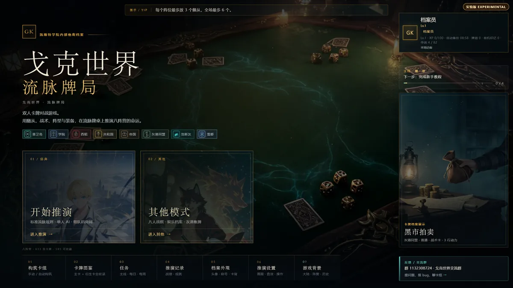
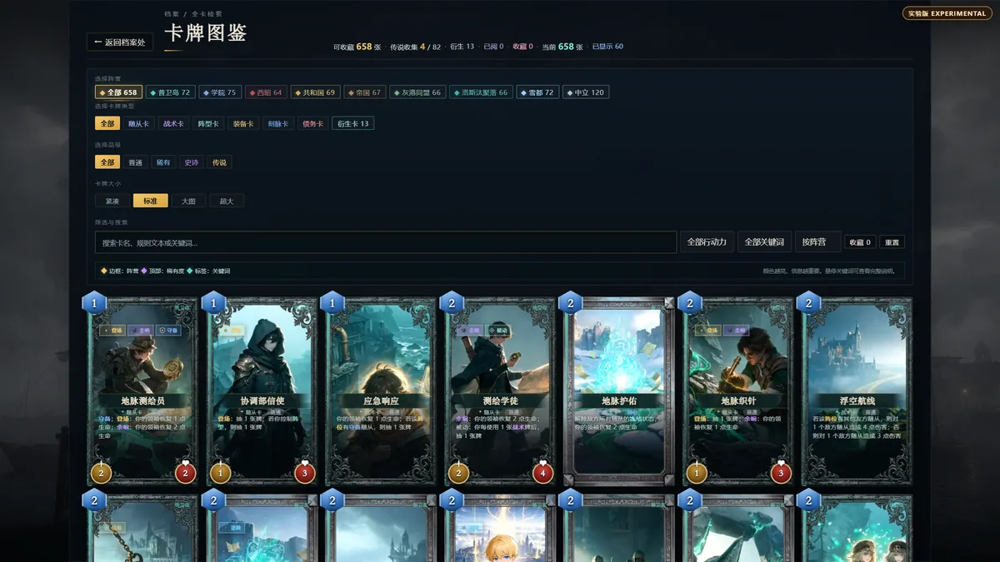
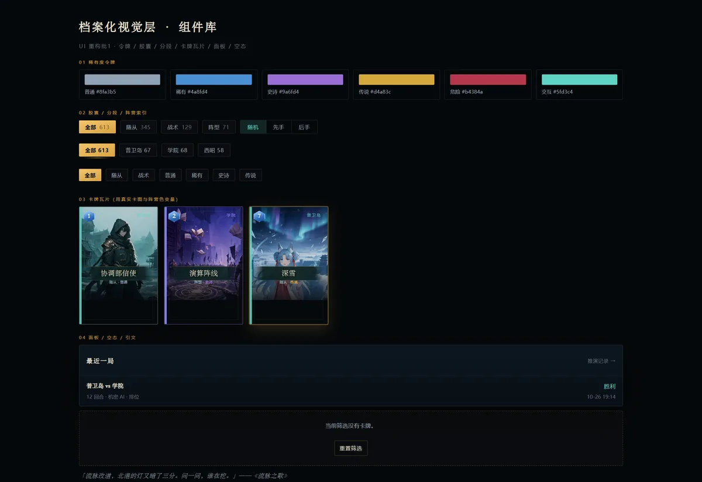
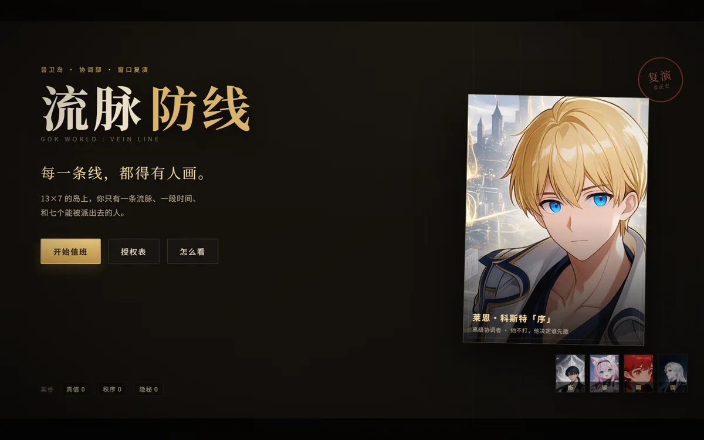
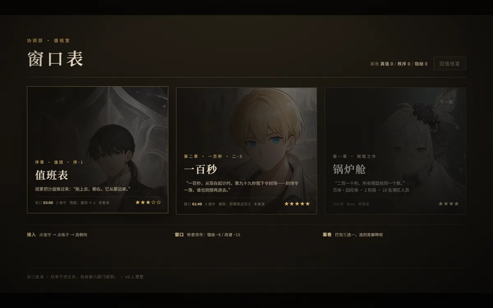
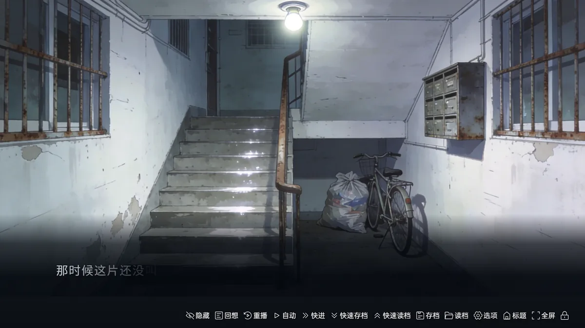
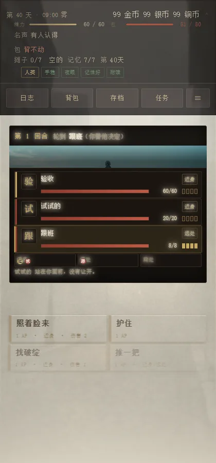
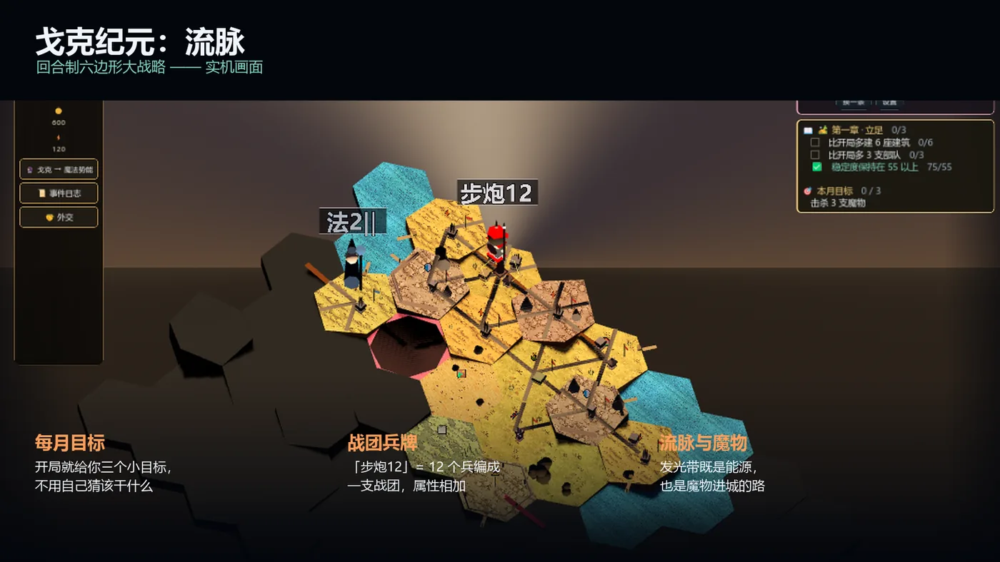
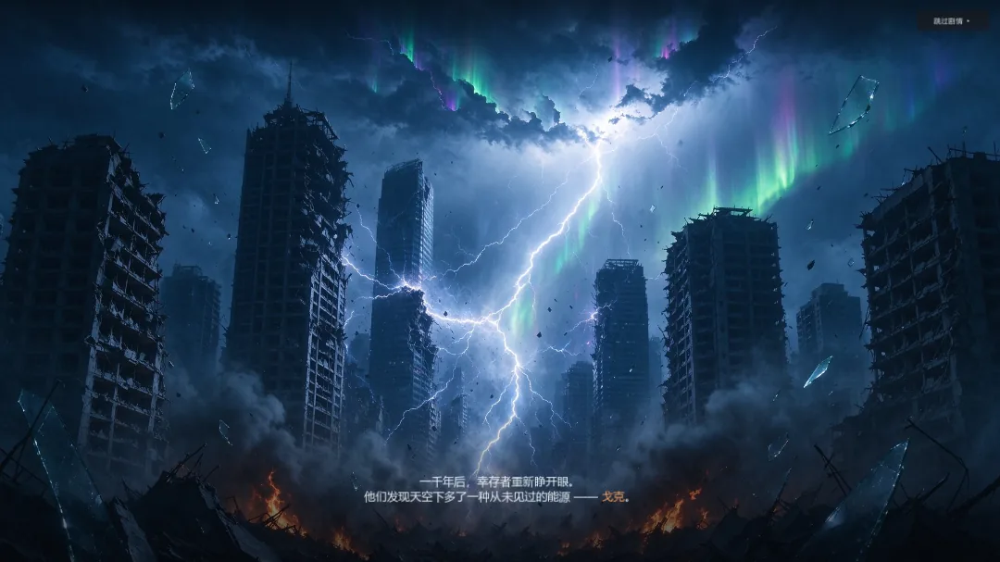
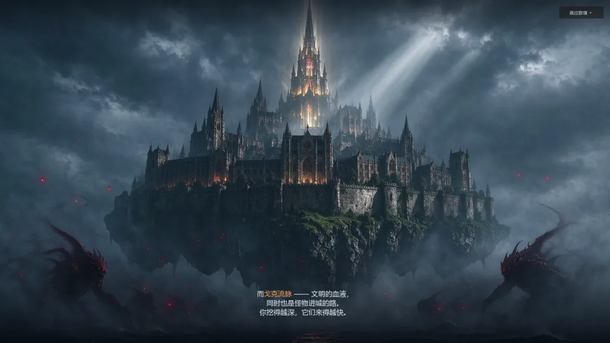
都还没上过平台。有的能直接玩，有的还在打样，反正一分钱没收过。
提醒一句：游戏为了好玩，有几款的背景是架空的，跟正典设定不完全一致。标了二创的是架空，《雪都路》就是其中之一。
游戏和卡牌都是衍生，衍生不许反过来改设定。所有事情以这十一章正文和二十四篇人物篇为准。
从一场没人愿意签字的火灾开始。规程写得很清楚，问题是写规程的人不在现场。
一百秒里，谁先撤。时间一到，谁留下谁背账。
报告怎么写，人就怎么活。这一章里，档案比枪管用。
序、衡、慧、镜、瞬、锲、昭。每人的来处、欠下的账、和那个说不出口的理由。
美术资产是 AI 辅助生成 + 人工修整，发布时如实标注，不藏。下面这些都能点开放大看。
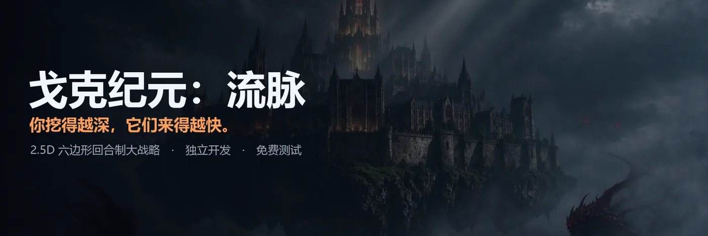
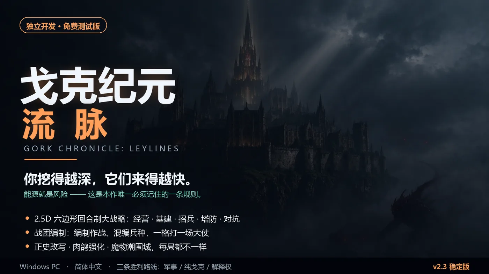
各阵营代表，全部是精二稿。三十六位角色有精二立绘，共 38 个文件。
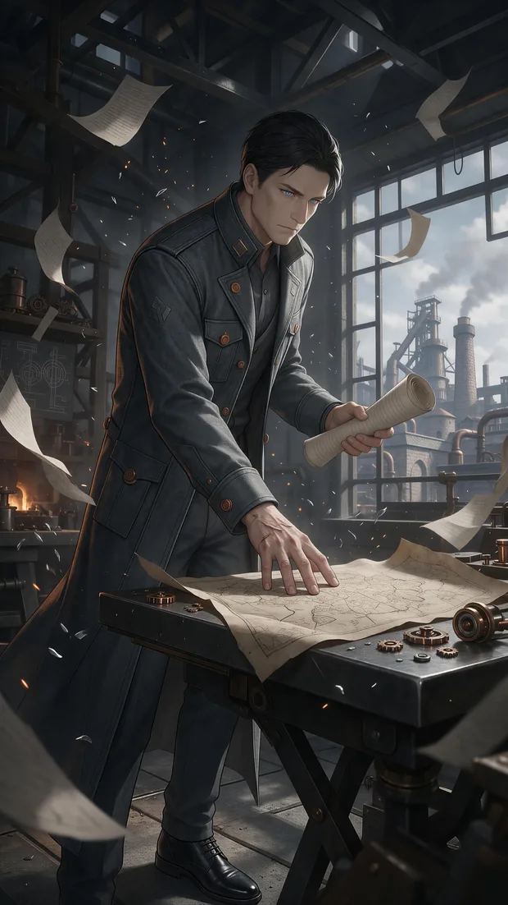
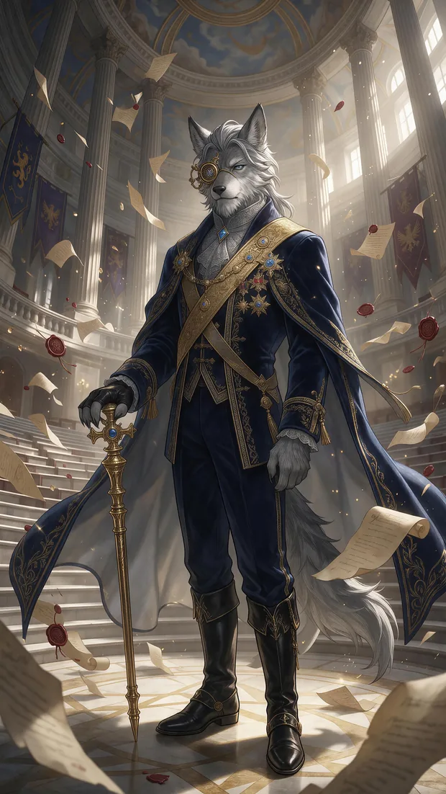
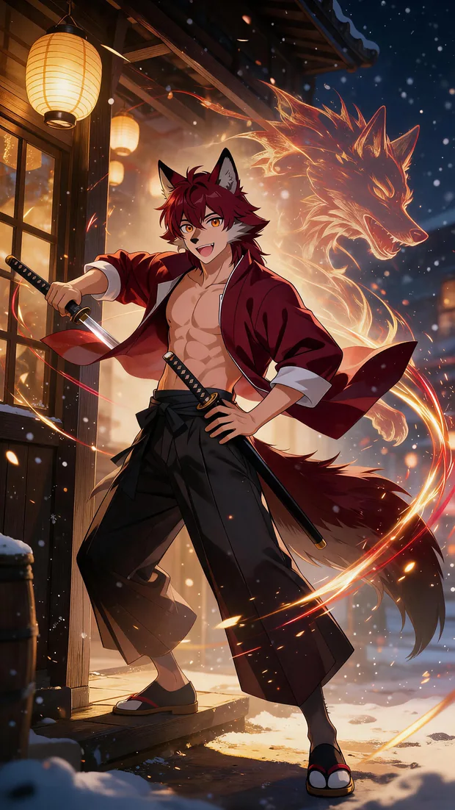
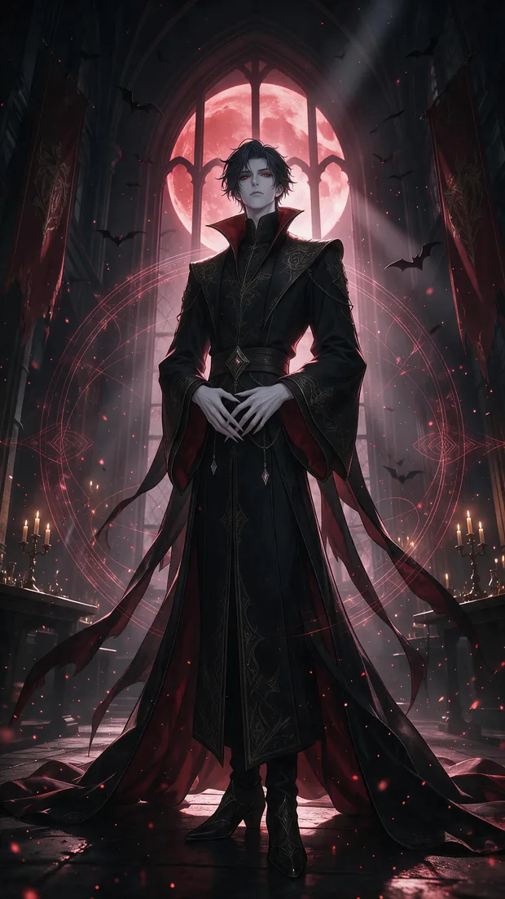
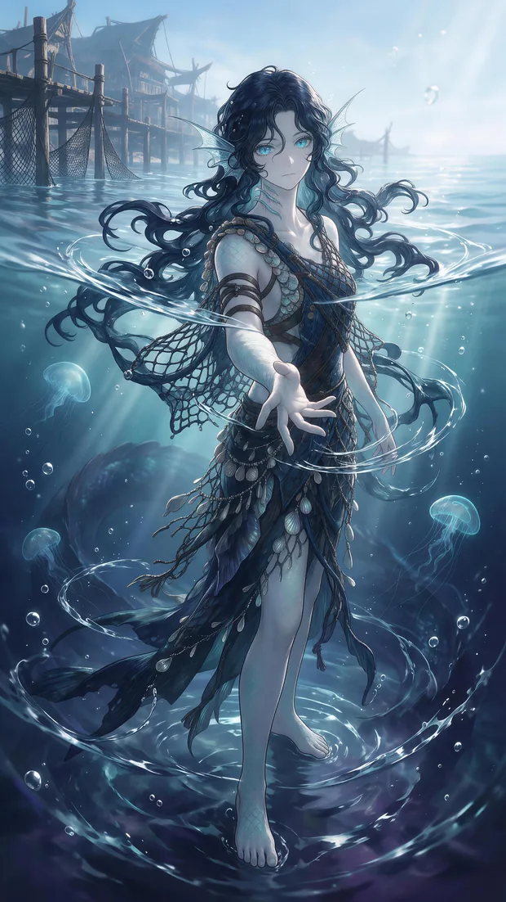
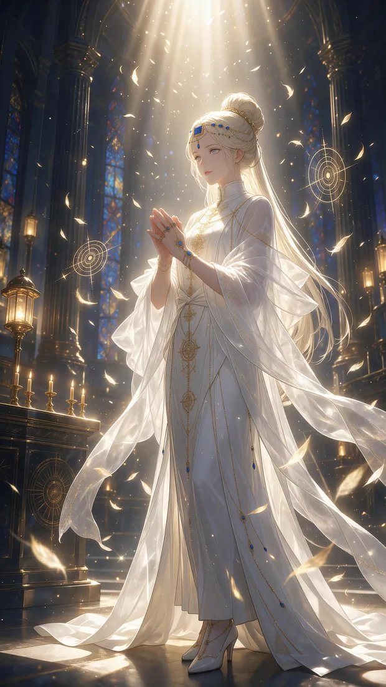
三十六位角色有精二立绘，共 38 个文件。莱恩、提蒙有 v2，维里欧斯有 v3，希斯蒂娜有 v2。
三版：地形图、古地图、可切换的六层专题图。地形、势力、航路、城市、历史、生物群系。
数百张阵营卡图，牌局的全部素材都在里面。
实机宣传片一条、剧情 CG 八段；配音零条。
一个人做到现在，缺的不是想法，是手。
卡牌插画、场景概念、UI 皮肤。目前 AI 出图 + 人修，想找能补关键资产的人。
牌局到现在 0 条语音。八位阵营领袖各四句，就能让角色从纸片变成人。
七款产品都 没上过任何平台。缺经验，也缺渠道，愿意一起学的也行。
同人、跑团模组、联名都能谈。设定给得开，只要不反向改正典。
第一次点进来最常问的几个，先答在这儿，省得你进群再问一遍。
都没上过平台，也没有商店链接。想试哪一款，进交流群说一声，作者直接把安装包发给你。到现在一分钱没收过，也没打算收。
小说和设定是正典，游戏、卡牌、整合包都是衍生。衍生可以自由发挥，但不能反过来改设定。雪都路是二创，它把人物搬到现代社会了，那套设定不算进正史。
世界观里就是六方：帝国、共和国、灰港同盟、普卫岛、西昭、洛斯汰。凯斯特学院是普卫岛下面的一个部门，不算独立的一方。卡牌为了玩法平衡，把学院单独拆出来、又给已经沉下去的雪都留了一方，才凑成八阵营——牌桌上的分法而已，不是设定改了口。
一部分是。流程是 AI 出图再人工修整，比例不低，所以统一标明。已经写了一份 AI 美术与音频的披露口径，发布时会如实标注，不藏这件事。
同人、跑团模组、联名都欢迎，设定给得挺开，只要不反向改正典。商用和二创改编要先联系作者谈。另外一句请求：别拿这些图去训商用自己的模型。
这是创作底线。这个世界里每一次调用都在欠账，每个人物都得欠点什么，不写完美的人。所以故事里没有白拿的好处，赢了也要付账。
设定、约稿、挑刺、单纯想看进度，都从这里进。